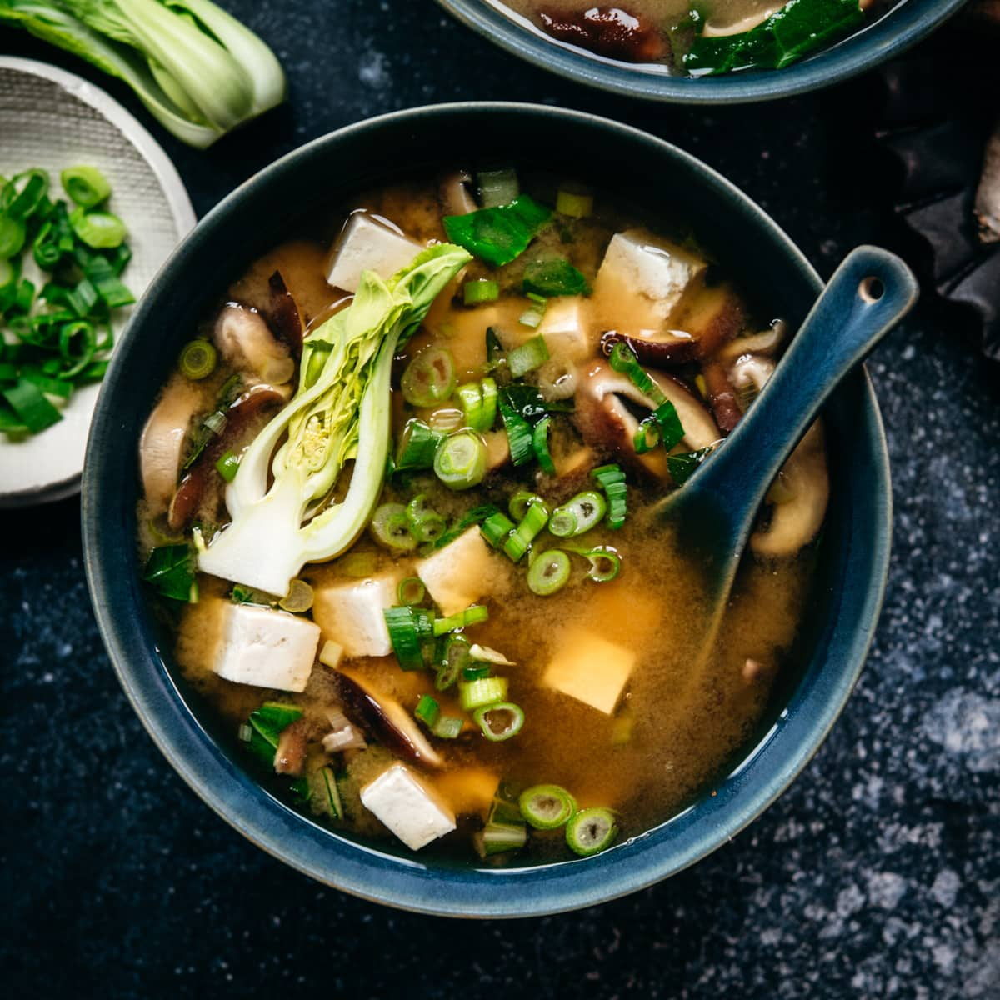

Miso Soup

Miso soup is a traditional Japanese soup consisting of a dashi stock into which softened miso paste is mixed.
Ingredients
- 5g dried wakame seaweed
- 1l dashi
- 200g fresh silken tofu , or firm if you prefer, cut into 1cm cubes
- 2 tbsp white miso paste
- 3 tbsp red miso paste
- spring onion , finely chopped, to serve
Steps
-
Put the wakame in a small bowl and cover with cold water, then leave it for 5 mins until the leaves have fully expanded.
-
Make the dashi (see tip below) or heat until it reaches a rolling boil. Add the tofu and cook for 1 min before adding the seaweed.
-
Reduce the heat. Put both types of miso in a ladle or strainer and dip it into the pot. Slowly loosen up the miso with a spoon inside the ladle or strainer; the paste will slowly melt into the dashi. Once all the miso is dissolved into the soup, turn off the heat immediately. Sprinkle with chopped spring onions to add colour and fragrance.
RECIPE TIPS
MAKE DASHI STOCK
Dashi stock can be made by simmering pieces of dried kombu seaweed and dried shitake mushrooms in water and draining. It gives an incredible, rich umami flavour and is well worth the effort. More traditionally, Japanese stock is made with fish – bonito flakes (smoked and dried tuna) are simmered in water with pieces of dried kombu seaweed and drained.